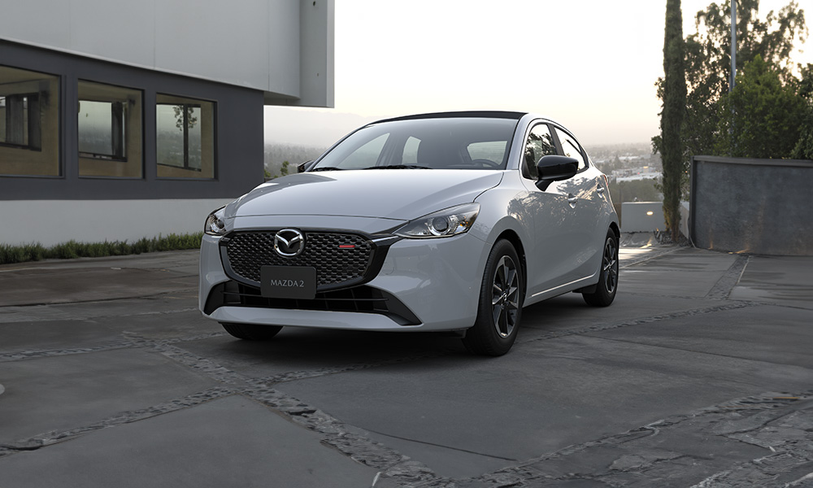
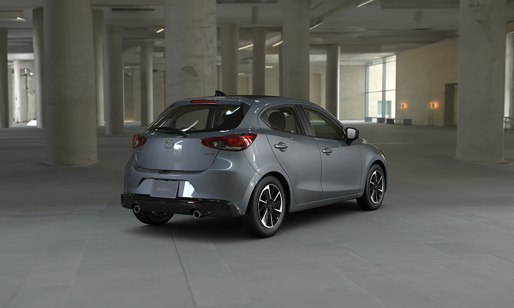

<!-- Formulario de contacto -->
<section class="container my-5">
    <h2 class="text-center">Contáctanos :))</h2>
    <form>
      <div class="mb-3">
        <label for="name" class="form-label">Nombre</label>
        <input type="text" class="form-control" id="name" required>
      </div>
      <div class="mb-3">
        <label for="email" class="form-label">Correo electrónico</label>
        <input type="email" class="form-control" id="email" required>
      </div>
      <div class="mb-3">
        <label for="message" class="form-label">Mensaje</label>
        <textarea class="form-control" id="message" rows="4" required></textarea>
      </div>
      <button type="submit" class="btn btn-primary">Enviar</button>
    </form>
  </section>

  <!-- Footer -->
  <footer class="bg-dark text-white text-center py-4">
    <p>&copy; 2024 Mi Empresa. Todos los derechos reservados.</p>
    <p><a href="#" class="text-white">Aviso de privacidad</a></p>
  </footer>

  <!-- Scripts de Bootstrap -->
  <script src="https://cdn.jsdelivr.net/npm/bootstrap@5.3.0-alpha1/dist/js/bootstrap.bundle.min.js"></script>
</body>
</html><!DOCTYPE html>
<html lang="en">
<head>
  <meta charset="UTF-8">
  <meta name="viewport" content="width=device-width, initial-scale=1.0">
  <title>Nuevo Mazda 2 Hatchback 2025</title>
  <link href="https://cdn.jsdelivr.net/npm/bootstrap@5.3.0-alpha1/dist/css/bootstrap.min.css" rel="stylesheet">
</head>
<body>
  <header class="bg-primary text-white text-center py-3"></header>
    <h1>Totalmente nuevo Mazda 2 2025</h1>
    <p>Un auto de ciudad con caracterísitcas premium</p>
  </header>

  <!-- Carrusel -->
  <div id="carouselExampleIndicators" class="carousel slide" data-bs-ride="carousel">
    <div class="carousel-indicators">
      <button type="button" data-bs-target="#carouselExampleIndicators" data-bs-slide-to="0" class="active" aria-current="true" aria-label="Slide 1"></button>
      <button type="button" data-bs-target="#carouselExampleIndicators" data-bs-slide-to="1" aria-label="Slide 2"></button>
      <button type="button" data-bs-target="#carouselExampleIndicators" data-bs-slide-to="2" aria-label="Slide 3"></button>
    </div>
    <div class="carousel-inner">
      <div class="carousel-item active">
        
      </div>
      <div class="carousel-item">
        
      </div>
      <div class="carousel-item">
        
      </div>
    </div>
    <button class="carousel-control-prev" type="button" data-bs-target="#carouselExampleIndicators" data-bs-slide="prev">
      <span class="carousel-control-prev-icon" aria-hidden="true"></span>
      <span class="visually-hidden">Previous</span>
    </button>
    <button class="carousel-control-next" type="button" data-bs-target="#carouselExampleIndicators" data-bs-slide="next">
      <span class="carousel-control-next-icon" aria-hidden="true"></span>
      <span class="visually-hidden">Next</span>
    </button>
  </div>

  
  <!--Inicio Silvia-->
  <section class="container my-5">
    <div class="row align-items-center">
      <div class="col-md-6">
        <h2>Sistema de alarma antirrobo</h2>
        <p>La seguridad en Mazda se coloca en el más alto nivel de prioridad. Una característica esencial del nuevo Mazda2 Hatchback es el Sistema de Alarma Antirrobo con Inmovilizador de Motor, esta función se enfoca en evitar el robo del vehículo al dificultar el encendido del motor por parte de personas no autorizadas.</p>
      </div>
      <div class="col-md-6">
        
      </div>
    </div>


    <div class="row align-items-center my-4">
      <div class="col-md-6 order-md-2">
        <h2>Bolsas de aire</h2>
        <p>En Mazda2 Hatchback, la seguridad es una prioridad absoluta. Hemos introducido un sistema de bolsas de aire de seguridad avanzada, que abarca 2 bolsas de aire frontales, 2 laterales y 2 laterales tipo cortina. Usamos tecnología de vanguardia para protegerte en cualquier camino. Las 6 bolsas de aire se encuentran estratégicamente ubicadas en el nuevo Mazda2 Hatchback, tu protector confiable en todo momento.1</p>
      </div>
      <div class="col-md-6 order-md-1">
        
      </div>
    </div>
  </section>
  <!--Fin Silvia-->
  
  <!--Inicio Fer-->
  
  <!--Fin Fer-->

  <script src="https://cdn.jsdelivr.net/npm/bootstrap@5.3.0-alpha1/dist/js/bootstrap.bundle.min.js"></script>
</body>
</html>